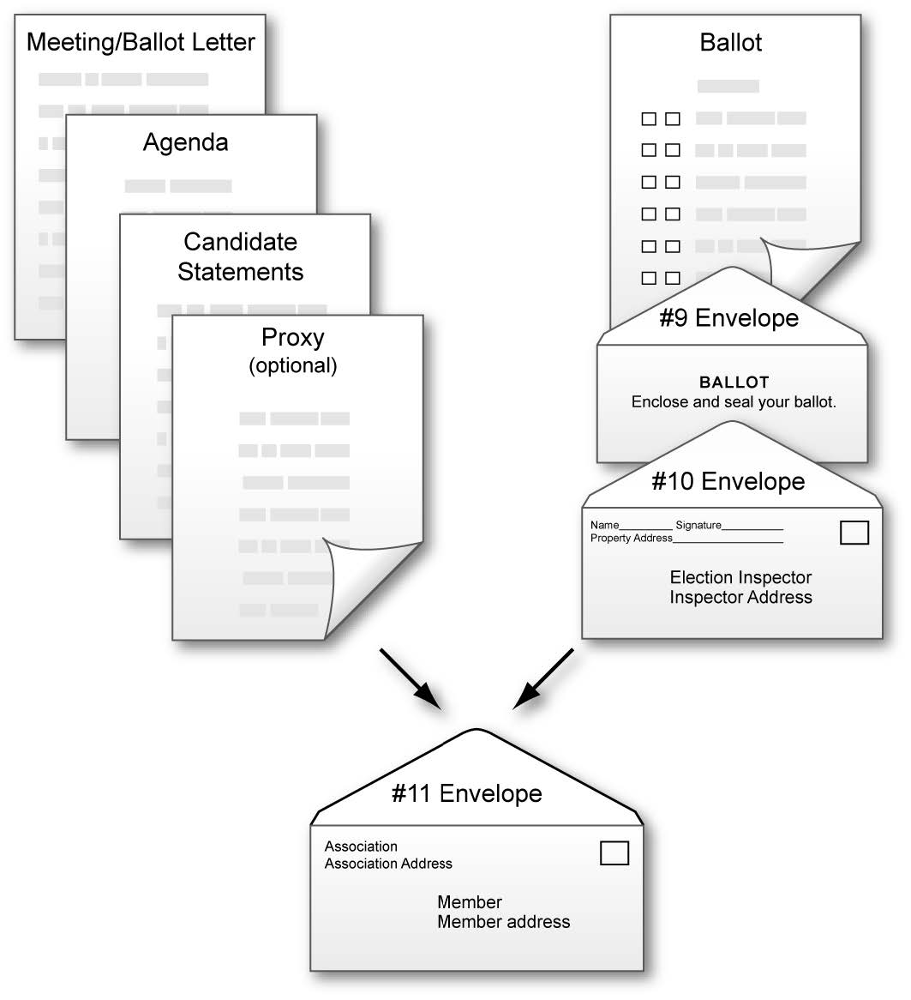
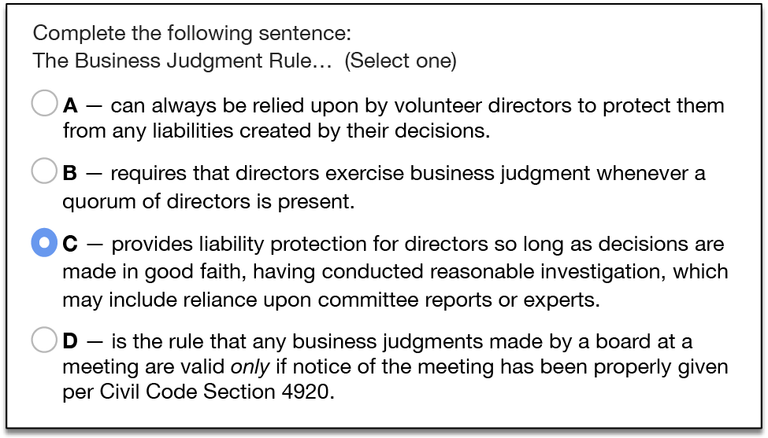

Reimagining Legislation for Community
Associations
Costly consequences of underinformed directors
How many corporations exist with directors responsible for
protecting a large portion of stakeholders’ equity typically having
so little applicable experience or knowledge of their duties or
legal responsibilities?
We have all seen and read about consequences of failed governance
of community associations — from petty irritations of hapless
administration of architectural rules preventing a homeowner from
flying a flag, to devastation of a community and lost lives
resulting from failure to conduct structural inspections and
maintain adequate reserves.
HOA managers and attorneys too often witness the dearth of
volunteers and the inordinate costs in time and funds wasted by HOA
Boards attempting to navigate issues affected by laws and best
practices about which directors are unaware — and time and costs for
recovering from consequences of actions or inaction.
Pool of qualified candidates varies with community size
Pool of qualified candidates varies with community size
Populations of most towns and cities usually are sufficient to
enable competitive elections and town- and city-councils with
talents in disciplines applicable to operating their governments.
However, the comparatively small population of most homeowners
associations often means a dearth of board candidates, many without
applicable qualifications. Often, HOA boards find themselves with
directors with virtually no experience in business,
finance, insurance, law, construction or many other applicable
fields.
HOAs with underqualified directors are the rule — not the
exception
HOA boards with under-qualified directors can have profound,
negative and costly effects on the lives of their members.
In my over forty-years of experience with HOAs I’ve found
well-meaning volunteers in a neighborhood setting tend to conduct
meetings within a social context wherein decisions are heavily
influenced by uninformed sensibilities and impulses of neighbors
present, without due diligence and investigation, consideration of
state regulation or standards of governance intended to protect
broader interests.
Mere availability of director education hasn’t been
sufficient
Even if a well-trained volunteer is elected and advocates for
established best practices and legal compliance, such informed
advice is often disregarded with deference given to an opposing
director’s longevity or assertiveness, or to expedience or politics.
Statutes and case law may as well not exist unless multiple
directors are aware of them. Often, only when a second
director reinforces and validates a director’s advice as deriving
from an authoritative source, does the dynamic change; only then are
directors apt to heed the advice.
To improve board performance in community associations, we must
find a way to increase community association members’ participation
on boards and ensure broader exposure of directors to best
practices, statutes and case law.
Certification to an established baseline of knowledge and
continuing education to maintain minimum standards is mandated in
Business and Professions code for attorneys, physicians, real estate
professionals and a myriad of other vocations with the potential to
affect consumers’ welfare. HOA directors also may profoundly affect
HOA members’ interests. Even so, while performance requirements
exist, education requirements making directors aware of them are
conspicuously absent.
Conventional licensing could hobble recruitment
Consider this argument against making director education
compulsory through legislation to require licensing:
“HOA directors are volunteers and many HOAs have difficulty
recruiting sufficient volunteers for their boards. An increased
burden of required education or certification may dissuade potential
volunteers, further exacerbating recruitment.”
At least one state, Florida, did try a licensing model.
A flawed model
We can learn from the Florida model, which loosely follows
consumer protection licensing requirements, ostensibly requiring
training to minimum standards. However, presumably to address the
objection that licensing would discourage potential volunteers, the
legislature created what I believe to be a fatal loophole that
effectively nullifies the program’s purpose: A would-be director may
circumvent training or passing an exam simply by indicating in
writing to the secretary they have read the governing documents and
agree to uphold them.
While this may have been a compromise to enable bill passage,
foreseeably it could be fatal to the purpose of informed
governance.
With a twist on the licensing model, we can do
better.
Rather than compel, we can incent education
Possible logo
I propose we create model legislation giving legislatures in each
state guidance and a head start in crafting bills that would enable
this program to incent members to participate on their
associations’ boards, and to seek to educate themselves as
directors and for boards to encourage directors’ education. (See Summary of state
legislation required to enable program.)
I propose that CAI (Community Associations Institute), ECHO
(Educational Community of HOA Homeowners), and other community
association-oriented education institutions advocate for such
legislation.
First, legislation would create a new law (in the case of
California, Civil Code Section 6200 to Division 4, Part 5, Chapter
12) that would
enable establishing a public-facing non-profit corporation,
for example, the Board of Certification for Community
Association Directors (BCCAD), to establish and administer the
program described herein.
create the credential for community association members,
Certified Community Association Director.
enable such an organization to administer tests and grant
certifications to common interest community members who meet
standards of knowledge of best practices and basic legal
requirements for governance of state community
associations.
enable maintenance of certification records and making such
records publicly accessible.
authorize such organization to coordinate with the Secretary
of State to enable key linkage with their community association
database records to facilitate records maintenance and avoid
unnecessary duplication.
enable the organization to employ such records to create a
community association COMPETENCE rating system derived
principally by the proportion of its directors with current
certifications, frequency of structural inspections and how reserves
are funded, and whether the board has committed to training and
legal oversight. See a list of parameters affecting
successful governance.
require an annual disclosure to members of the Board’s
COMPETENCE rating.
require adherence to a code of ethics and standards of
practice for community association directors.
require that any candidate certified under this program be
identified as such on any election ballot or list of
candidates.
Example certificate for a member or director who completes traiining or maintains continuing education requirements on rudiments of community association governance
Director certifications could earn benefits for their
associations
The BCCAD would calculate and publish ratings for
community associations based generally upon the proportion of its
directors with current certifications, frequency of structural
inspections and how well reserves are funded, whether the board has
committed to training and legal oversight, and whether it is
actively managed by a manager certified as provided by the state. It
would foster an environment wherein communities with higher ratings
may garner favored insurance premiums and prestige of being
identified by the state as being in the top-10, top-100,
top-1000.
Potential for lower dues
Insurance premiums typically are one of the largest budget items
affecting monthly dues. Insurance companies would be incented to
offer reduced premiums to those community associations that maintain
a certain rating as risk management would be part of the BCCAD
certification curriculum and exam. And reduced premiums translating
into lower dues may be a powerful incentive for community
associations to participate.
Potential for higher property values
Real estate values in communities that can boast such ratings may
benefit and provide a strong incentive for members to keep electing
candidates who are certified. Those that do not risk being at a
disadvantage.
Other benefits may be fostered as well, such as discounts from
services vendors, who may justify discounts as educated boards are
easier and more profitable to work with. (See Multiple broad benefits.)
Board of Certification for Community Association Directors
(BCCAD)
The COMPETENCE training program
The training program overseen by BCCAD would be known as the
COMPETENCE program, an acronym for
Community Oversight and
Management Principles
Education To
Engender Community
Excellence. (This acronym also complements the
preferred means of attaining certification — through the Competency Based
Education1 method.
The state would not require community association
directors to participate in the COMPETENCE training or
to be licensed; thus, community associations may continue to operate
as they have without fear of a requirement that might discourage
members from volunteering. However…
There would be incentives for those associations that encourage
their directors to participate and become certified. (See
Multiple broad
benefits.)
The program would allow any association member of a
residential common interest development to attain a
certification as Certified Community Association Director
by passing an examination on essential rudiments of CID oversight.
Certification would be maintained by accumulating continuing
education credits.
This would ensure consistency with legal requirements (for
California, Civil Code § 5105-a-3) that any association member be
eligible for candidacy and provides equal footing for non-directors
to attain certification that may affect perceived qualifications as
board candidates.
Any member’s certification status under this program would be
verifiable via a website, as for verification of licenses and
certifications for professionals and service providers (for
California, those operating under Department of Consumer Affairs
regulation). m_line
Multiple broad benefits
Benefits described below — particularly those involving reduced
costs for the association affecting dues — may motivate CID boards
to press directors to engage in the program and maintain their
certifications and association ratings that would merit such
benefits. Thus, association members may be motivated to vote for
those candidates who are certified to maintain qualifying status and
thus help control dues.
Benefits for community associations
An overall board COMPETENCE score or rating would be
calculated for each community association, derived primarily from
the frequency of structural inspections, percentage of funding of
reserves, proportion of directors who are certified, proportion of
directors’ seats that are filled, whether they have engaged a
manager who is certified, have engaged an attorney specialist and
have committed to continuing education. (See Determination of community
association COMPETENCE star rating.
The BCCAD would maintain a list of the top-10, top-100, top-1000
community associations by rating. Real estate values in communities
who can boast such ratings may benefit and provide a strong
incentive for members to keep electing candidates who are certified.
This also should incent directors and members to keep their
association’s rating high to enhance property values.
Disclosure of the board’s rating would be required in the annual
policy statement provided to all members (in the case of California,
pursuant to Civil Code §5310), also ensuring prospective purchasers
would receive it. (See example candidate
biographies document.
Benefits for community association insurers
Insurance companies have long recognized the value of training of
customers in improving risk management and reducing casualty costs.
This program should result in more directors with demonstrated
knowledge of best practices, current law and awareness of principles
of risk management. An informed Board should be less likely to
neglect structural inspections, under-fund reserves, fall askew of
the law and incur unexpected legal expenses or special assessments.
As such education could lower risk and insurance premiums —
typically one of the biggest budget items for CIDs — this
could provide a compelling motivation for boards to promote
education among their directors and make certified candidates more
attractive to the dues-paying members.
The BCCAD could work with insurance providers to demonstrate how
such a program could reduce risks and encourage offers of discounts
on premiums for those associations that can maintain a certain
rating.
Benefits for candidates
Indicating certification status on ballots and election materials
with candidate lists — with a CCAD designation
or simple asterisk and footnote — would be an indicator of a
candidate’s commitment to improve knowledge of best practices and
legal requirements. For associations where elections are
competitive, this could influence members in their voting and
increase overall board competence.
Benefits for management companies
The program should strongly incent management companies to ensure
all of its managers are certified. This is because an association’s
COMPETENCE rating will be affected by whether its
manager — If it has one — is certified. (See the calculation for an
Association’s rating under Determination of board of
directors COMPETENCE star rating.)
Faced with competing bids from two management companies — one who
will provide a CACM-certified manager that will increase the board’s
rating, and one that cannot — which will they select?
Much of a manager’s time may be spent advising directors and
dealing with issues that would not have surfaced had directors been
better informed. This program should help with such education.
Management companies may discover such benefits sufficient to
warrant offering a discount for boards that can maintain higher
ratings or increasing management fees should the board’s rating drop
below a certain number. Management fees usually are one of the
largest budget items affecting dues.
Increased membership for community association educators
Should we succeed in having legislation passed to create the
BCCAD, community association education organizations likely would
see a substantial increase in membership. Those already at the
forefront — CAI, ECHO, CACM — particularly should benefit given
their established prominence and reputations for excellence.
Other benefits of the program
Community Association services providers may by convinced to
offer discounts for those associations who maintain high ratings, as
informed boards should be easier and more profitable to work
with.
May help bootstrap volunteer recruitment
As legislation would mandate publishing of the board’s rating and
the certification status of candidates, association members should
become increasingly aware of the potential cost of insufficient
participation on the board by qualified directors and the effect of
directors’ education on dues, likely to induce increased
participation.

Also, the need and techniques for recruitment, training,
motivation and retention of volunteers should be part of directors’
education within this program. Thus, while it may be naïve to
anticipate director education will completely solve recruitment
issues, my experience has shown that awareness of the need for such
activities has made a difference in both quantity and qualifications
of volunteers.
Would save time and help keep directors on the same page
An inordinate amount of time in meetings is spent debating
directors’ lay opinions regarding how issues should be treated, when
applicable regulation and proven best practices already exist.
I suspect almost anyone who has attended association board
meetings over time can relate anecdotes reflective of this. I
attended a meeting where an influential senior director argued
against seeking legal advice regarding a potential liability,
rationalizing a consultation would be pointless because “there will
always be another attorney with a different opinion.” She boasted
that, while she had been president, “we never got legal
advice” — as if that should be the board’s policy. Her argument
prevailed, reinforced by a new board president who declined to heed
a statute called to her attention, responding “I’m not an attorney
and I won’t interpret the law.”
Had even a couple of directors been in exposed to rudiments of
risk management, I believe this would not have occurred. Such
exposure would be part of the training and certification
process.
May help freshen board composition
Many boards have one or more directors who have remained
year-after-year having exhibited no effort to inform themselves
regarding directors’ obligations. For no other reason beyond
longevity, perceived seniority or force of personality, they
continue to maintain strong, if underinformed, influence. If
directors and members do invest in education under this program,
theoretically, continued tenure of underinformed directors may
become less likely, raising overall board competence.
May help ensure incorporated associations retain corporate
status
In order to participate, the applicant’s association must be
registered with the program. Associations will be required to enter
their entity number assigned by the Secretary of State when
incorporated or when registering pursuant to the law (in the case of
California, Civil Code §5405). When checking for that number, any
lapse in the association’s registration should be revealed so the
association may take remedial action.
Becoming a Certified Community Association Director
Initial certification
An individual seeking initial certification must pass an exam to
demonstrate knowledge of essential rudiments of CID law and
governance best practices.
Regarding stringency of requirements for director
certification
Director testing requirements are modeled somewhat after
California Business and Professions Code §11502 — Certified Common
Interest Development Manager Criteria. However, whereas testing for
manager certification represents an opportunity for vocational and
income advancement, testing for volunteers’ certification has the
potential to be a barrier for essential director recruitment —
already difficult for many community associations. Therefore,
requirements for director certification are reduced from those for
manager.

The number of questions and required percentage of correct
answers would be determined by BCCAD, the objective being to ensure
knowledge of fundamentals while not discouraging participation by
unpaid volunteers. The policy may be adjusted over time as results
are gauged and as required to meet this objective. An example policy
might be the following:
Initial certification would require correctly answering, for
example, 40 of 50 questions in an exam, open-book to
encourage review of any material about which the applicant may be
uncertain. There might be a one-week time limit for
completion.
A failed exam may be taken over until successful, with a
minimum 24-hour waiting period to encourage review of training
materials. Multiple versions of the certification exam may be
prepared and used to allow for repeat testing, discourage
teaching the test and better ensure a fair assessment of
knowledge.
Classes and presentations may precede the online exam,
however, a candidate also may learn through alternative means more
accommodating for a working adult, such as articles, books and
online courses.
Upon successful completion, certification status would be
recorded into the database, accessible online. The applicant would
be notified by e-mail and a PDF certificate generated for optional
download.
These example policies may be modified as experience is
accumulated.
Maintaining certification
An example policy for maintaining certification might be the
following:
To maintain certification, one must accumulate a minimum of eight
continuing education credits (CECs) every four years from date of
initial certification. At least 50% of those credits must derive
from material covering state law or legal topics, authored or
approved by an attorney practicing CID law in the state.
Given that CID directors are unpaid volunteers, this program
strives to achieve a balance of incenting meaningful education
without overly burdensome requirements that may discourage volunteer
recruitment. We also recognize individuals’ learning styles vary and
allow for this in awarding certification and continuing education
through these methods:
Formal in-person classes — Attending in-person
BCCAD-qualifying classes or presentations offered by institutions
such as CAI and ECHO. No exam would be required for classes attended
in-person although the instructor would be encouraged to distribute
a written summary of key points.
Online courses — Taking BCCAD-approved online courses and
correctly answering a minimum of 75% of questions in an online
quiz.
Published articles — Reading articles in periodicals
published by BCCAD-approved institutions such as CAI and ECHO and
answering correctly a minimum of 75% of questions in an online
quiz.
Technology-centric to minimize costs and issues
Inasmuch as the program’s creation and existence may be
predicated upon efficiency and minimal budget impact, emphasis will
be given to applying technology for
Testing — Certification examinations would be taken online to
minimize impediments to certification and program administration
costs and to ensure uniform, timely and reliable registration and
management of certification and crediting. Reasonable allowances may
be made to accommodate partner organizations’ testing
methods.
Courseware and continuing education materials — Courseware
and industry article authors who wish their material to be available
for training and continuing education credits would be provided
instructions and means for formatting and placing their material
online. Such material and CE quizzes would be subject to
review by the BCCAD before being activated.
Determination of credits
Each unit of continuing education credit would be equivalent to
exposure to one of the following:
15-minutes of substantive class instruction of
BCCAD-qualifying material.
1,000-words of substantive BCCAD-qualifying written material
followed by correctly answering a minimum of 75% of questions on the
material in an online quiz.
Approval of classes
A detailed lesson plan or class outline should be submitted to
BCCAD, nominally via its website.
Approval of online courses and published articles
Writing style variation defies precise assignment of credits per
given volume of material. However, an author or instructor should
attempt to meet the following guidelines before submitting material
via the BCCAD website for approval:
One credit may be awarded for each 1,000 words of substantive
material2 with a minimum of 75% correct answers
to questions that follow. The author should include
approximately 1-question per each 200 words of substantive written
material. For example, a 1,000-word article would be followed
by 4-to-6 questions. The minimum number is indicated in the
table.
A variance for extraordinary circumstances may be applied for to
BCCAD.
Table — Credit calculation examples
Method
Substantive length
Credits
Min. Quiz Questions
Number of Questions
In-person class or presentation
10 min
0
15 min
1
20 min
1
30 min
2
40 min
2
45 min
3
50 min
3
1 hr
4
2 hr
8
…
Online courses, articles, written material
1,000 words
1
4
4-6
1,500
1
6
6-9
1,600
1
6
6-10
1,700
1
7
7-10
1,800
1
7
7-11
1,900
2
8
8-11
2,000
2
8
8-12
3,000
3
12
12-18
4,000
4
16
16-24
…
*A minimum of 75% correct answers is required for credit.
Continuing education exams may be open-book, with full access to
material, encouraging an applicant to review any material about
which he or she may be uncertain. A failed exam may be taken over
until successful.
Example credits earning scenarios
The following include examples of how one may accumulate the
required 8 credits to maintain certification for a 4-year
certification period.
Attending 4, 1-hour sessions at each of 2 annual CAI or ECHO
conferences.
Attending 4, 1-hour sessions at 1 annual CAI or ECHO
conference, plus reading and successfully completing online exams
for 4, 1,000-word articles.
Taking an online 4,000-word course with exams, plus reading
and successfully completing online exams for 4, 1,000-word
articles.
Reading and completing online exams for 4, 1,000-word
articles plus reading and successfully completing online exams for
2, 2,000-word articles.
…any other combination of activities in Table 1 may be
employed to attain the minimum credits.
Credits in excess of those required for certification are
laudable but cannot be applied to certification in
subsequent periods inasmuch as current certification
implies exposure to and knowledge of current legislation
and developments in best practices. However, the total number of
credits accumulated by an individual may be published in the online
database as an incentive toward continuing education m_line
m_newpage
Determination of community association COMPETENCE
star rating
Whereas a calculated numeric score or rating may require
interpretation, ratings based upon the popular and ubiquitous
five-star model have come to be immediately and intuitively
recognized. An eminently recognizable star rating next to
the association’s name may incentivize an effort by its directors to
increase its rating by ensuring all positions are filled and
directors’ receive training — the primary objectives of this
program. Directors informing association members how the rating may
affect dues may heighten members’ awareness of the importance of
volunteering for board participation.
The rating calculation includes normalization to a maximum of
five for presentation in the five-star format, e.g., a rating of 2.9
would be presented as
A board’s COMPETENCE rating would be determined by a formula that
may be adjusted by BCCAD from time to time as relevant factors
become apparent. Factors to be integrated into the rating formula
include those most heavily associated with a healthy community.
The initial formula is as follows:
\[ rating = (RP * .01) + FP +
(\frac{Number\ of\ currently\ certified\ directors\ and\
manager}{Max\ directors\ per\ Bylaws}* \frac{Actual\ number\ of\
directors}{Max\ directors\ per\ Bylaws} * 3)
\] …where RP is Reserves Percent funded and FP is the
Foundational Partners credit. (See below.)
RP: Reserves percent funded
Community Associations Institute (CAI) defines reserves percent
funded as “The ratio, at a particular point in time related to the
fiscal year end, of the actual (or projected) reserve balance to the
fully funded balance, expressed as a percentage.” Generally, percent
funded is a gauge of how well the association has anticipated
infrastructure repairs and replacement require-ments and assessed
members so as to accumulate amounts sufficient to cover such costs
without additional funding or special assessments.
The state must pass legislation to require community associations
to engage a professional engineering firm every three-to-five years
to physically inspect physical infrastructure, determine estimated
remaining life, projected repair and replacement costs, and specify
a dollar amount that must be contributed on a regular basis in order
for such funds to be available when needed. The topic is discussed
more fully in the CAI publication, National
Reserve Study Standards.
Formula may be amended
The proposed formula above gives substantial weight — an entire
star — to sufficiency of structural inspections, reserves studies
and funding. The measure for funding adequacy used in the formula is
reserves percent funded. However, not all associations use
the funding model for which percent funded is appropriate
to gauge funding sufficiency.
Fully Funded Model — setting a Reserve funding goal of
keeping the Reserves at or near 100% funded. Reserves percent
funded indicates how well the reserves are funded.
Threshold Funded Model — setting a Reserve funding goal of
keeping the Reserve balance above some threshold. Depending on the
mix of common area major components this model may be more or less
conservative than the fully funded model. The only way to tell is to
compare the two models closely.
Baseline Funded Model — “Minimum Funded Model - setting a
reserve funding goal of keeping the reserve cash balance at the end
of each year in the overall reserve funding projection at or above
$0.”
Therefore, the above proposed formula may be amended to
accommodate the alternative strategies.
FP: Foundational Partners credit
FP is the foundational partners credit and
credits the association with having established the two key
relationships essential to directors’ education and informed
decision-making:
membership in a community association educational institution
approved by BCCAD, such as CAI (Community Associations Institute) or
ECHO (Educational Community of Homeowners). A current membership in
either organization is equal to one-half-point (0.5), the limit for
this credit even with membership in more than one.
A qualifying educational institution will periodically provide
directors with published magazines and/or newsletters containing
articles on community association law and best practices in
management and oversight.
an attorney specializing in state community association law.
Certifying to BCCAD the association has established a client
relationship with such an attorney will credit the association with
one-half-point (0.5), the limit for this credit even if a
relationship with more than one exists.
There is no minimum required number of consultations per year to
retain this portion of the FP credit. However, communities are
reminded to seek a consultation as circumstances warrent. Should a
court or arbiter of binding arbitration issue a ruling against a
community association on a liability issue, the association would
lose the entire FP credit for a period of two years from the most
recent adverse ruling.
Unsophisticated directors believing they were saving money by
avoiding legal consultations is a common occurrence. Potential for
substantial losses involving members’ interests mandates a
continuing relationship with an attorney specialist and this is
reflected within the rating system.
Rating calculation example
The COMPETENCE rating would be displayed as both stars and a
number.
As an example, consider an association
whose reserves are 74% funded, based upon a report by a
professional engineering firm that examined physical infrastructure,
estimated remaining useful life of components and calculated
reserves percent funded.
whose board or attorney has certified to BCCAD it has
established a client relationship with an attorney specializing in
state community association law (for one-half credit) and
is a current member of an approved community association
education organization, such as CAI or ECHO (for one-half
credit).
has six directors, where the Bylaws specifies a maximum of
seven.
that has four directors certified and the association has
engaged a manager who is CCAM-certified.3 The board rating
would be
The above rating result would be rounded to, for example, 3.2 for
the star-rating display on the BCCAD website and downloadable report
in both stars and number format as in the following example. (See
page 26.)
Precision rating
While a rounded number would be displayed with the star rating, a
full-precision floating point value would be used to further
differentiate community associations when calculating ratings for
Top 1,000, Top 500, Top 100, etc. placement. These ratings may
further incent directors to maintain their education as such ratings
might be used by insurance underwriters in evaluating risk factors
and by real estate professionals when promoting property sales and
values.
Effective date of rating
The community association’s rating would be recalculated and
effective immediately following any change of Board composition or
certification or change of manager or foundational partnerships that
would affect the rating. Thus, an association’s rating could not
readily be manipulated by temporary director appointments or
resignations.
Summary of state legislation required to enable program
Success in incenting participation and education for informed
governance is predicated upon universal applicability of COMPETENCE
ratings. Were application of ratings merely elective, there would be
little incentive for community associations to maintain ratings.
Therefore, legislation would be required that would do all of
the following:
require community associations to engage a professional
engineering firm every two-to-five years to physically inspect
physical infrastructure, determine estimated remaining life,
projected repair and replacement costs, and specify a dollar amount
that must be contributed on a regular basis in order for such funds
to be available when needed. The report also must calculate the
percent funded. The topic is discussed more fully in the CAI
publication, National
Reserve Study Standards. (Also see Reserves percent
funded.)
Model legislation governing community
association structural inspections, reserves studies and funding has
been in effect for many years and has been refined and proven. It is
manifest as California Civil Code sections 5550,
5560
and 5300.
set standards for and recognize a qualifying organization
whose purpose is to promote voluntary education of best practices
and legal requirements for community association governance and to
certify members who demonstrate such knowledge with designation as
Certified Community Association Directors. (See proposed California statute
enabling creation of BCCAD.)
require an annual policy statement disclosure to members that
includes the Board’s COMPETENCE rating. (In the case of California,
this would mean amending Civil Code §5310 See proposed California amendment to Civil Code
§5310.)
require that any candidates certified under this program be
identified as such in any election materials. (Example election
materials illustrating this are in a proposed new California Civil
Code §5105(a)(8) included in Exhibit B —
Election materials must include certification
info.
require that information be provided regarding how
any association member may apply for certification under
this program. (Example documents illustrating compliance are
included as new (California) Civil Code §5105(a)(9) in Exhibit B —
Election materials must include certification
info.
require community associations to include the number of board
seats indicated in their Bylaws to other information they are
required to provide the Secretary of State annually (used to
calculate the association board’s COMPETENCE rating). (For
California, this would mean adding a sub-paragraph (12) to Civil
Code §5405(a).)
authorize such organization (BCCAD) to have a means for
coordinating with the office of the Secretary of State to ensure
existing CID records are accessible by the organization for purposes
of this program and IT managers can integrate certification and
other required information where sensible and appropriate so as to
preclude unnecessary duplication of records and potential for
confusion. \[Specific language not yet
proposed.\]
authorize such organization (BCCAD) to contact CIDs to
promote and administer the program. \[Specific language not yet
proposed.\]
General Legislation for Community Associations
For states that have not yet passed extensive legislation, I
suggest examining statutes passed by other
states in a reference index compiled by Community Associations
Institute. Inasmuch as California was early to adopt comprehensive
legislation for common interest developments in the early 1980’s,
which has since been refined, restated and proven, I suggest
reviewing that first. This code for Common Interest Developments is
also known as the Davis-Stirling
Act. California also has substantial Corporations
Code specifically for Non-profit Mutual Benefit Corporations,
including community associations.
This description and proposal for a voluntary
state-sanctioned program to promote participation on and education
for community association boards is being circulated within the
industry for discussion. Comments and suggestions are
requested.
Exhibit A — Example statute enabling creation of certification
authority
This example is numbered for California but should be readily
adaptable for any state.
Proposed new Civil Code Section 6200
A new Section 6200 would be added to Civil Code Division 4, Part
5, Chapter 12:
Chapter 12 — CERTIFIED COMMUNITY ASSOCIATION DIRECTOR
6200 For purposes of this chapter, the following definitions
apply:
“Common interest development” has the same meaning as defined
in Section 4100 of the Civil Code.
“Association” and “Community Association” have the same
meaning as “Association” as defined in Section 4080 of the Civil
Code.
“Board” has the same meaning as defined in Section 4085 of
the Civil Code.
“Director” has the same meaning as defined in Section 4140 of
the Civil Code.
“COMPETENCE program” is a program administered by an
organization estblished to promote Community Association governance
training and certification for members who are or may become
directors. COMPETENCE is an acronym for Community
Oversight and Management
Principles Education
To Engender
Community Excellence.
“COMPETENCE rating” of a Community Association’s Board shall
be determined by a formula created by a Director certification
organization as defined below and such formula may be adjusted by
such organization from time to time as experience may influence. It
shall be determined by factors including but not limited to the
following:
the proportion of directors currently certified under this
program.
whether a manager it engages has qualified for certification
under [state law authorizing certification for community association
managers — in the case of California, Business and Professions Code
§11502].
reserves percent funded determined from a reserves study
conducted by a credentialed reserves study professional that takes
into account an inspection conducted by a licensed structural
engineer.
whether it maintains a current membership in an organization
that provides training to residential common interest association
members on legal requirements and best practices for community
oversight.
whether it maintains a retainer for an attorney specializing in
residential common interest law.
“Director certification organization” means an organization
that meets all of the following:
Is chartered to administer tests and grant certifications to
citizens of [state name] who meet their standards of knowledge of
best practices and basic legal requirements for governance of
California Community Associations.
Operates pursuant to Section 501(c) of the Internal Revenue
Code.
Requires adherence to a code of ethics and standards of
practice for Community Association directors.
6205 — In order to be designated a “Certified Community
Association Director,” a person must have passed an examination or
examinations of no less than fifty (50) questions that test
knowledge in common interest development oversight in the following
areas:
The law that relates to the oversight of common interest
developments, including, but not limited to, the following courses
of study:
Topics covered by the Davis-Stirling Common Interest
Development Act, contained in Part 5 (commencing with Section 4000)
of Division 4 of the Civil Code.
Topics covered under Nonprofit Mutual Benefit Corporations,
contained in Part 3 of Division 2 of Title 1 of the Corporations
Code.
Risk management, including, but not limited to, the business
judgment rule, structural inspections, reserves studies and reserves
funding,liability principles and insurance coverage.
Personnel issues, including, but not limited to, general
matters related to independent contractor or employee status, the
laws on harassment, the Unruh Civil Rights Act, the California Fair
Employment and Housing Act, and the Americans with Disabilities
Act.
Business affairs of associations and common interest
developments, including, but not limited to, necessary compliance
with federal, state, and local law.
Basic understanding of governing documents, codes, and
regulations relating to the activities and affairs of associations
and common interest developments.
Instruction in general common interest development governance
including, but not limited to, the following:
Relationships with and communications with members,
residents, employees and contractors.
Types of meetings and notice requirements.
Conduct of meetings and parliamentary procedures.
Finance issues, including, but not limited to, understanding
and working with budgets, income and balance sheets, structural
inspections,reserves studies and funding requirements.
Preparing project specifications, contractor bidding,
qualifications and evaluation, awarding contracts.
Board role in monitoring contractor and employee
performance.
Oversight of maintenance programs.
Creation of rules and regulations, including architectural
standards, and requirements for enforcement.
Conflict avoidance and resolution mechanisms.
Ethical conduct and standards of practice for common interest
development directors.
Current issues relating to common interest
developments.
Exhibit B — Election materials must include certification
info
This example is numbered for California but should be readily
adaptable for any state.
Proposed amendment to identify certified candidates
Add new Civil Code §5105(a)(8) to require that any candidate
certified under this program be identified as such:
“Ensure any ballot and list of board candidates identifies any
candidate certified by an organization as provided under Civil Code
§6200 as having a current certification by placement of an asterisk
or other legend or footnote indicator next to the candidate’s name,
and includes a legend or footnote containing substantially the
following:
‘*Indicates candidate has met requirements set by the [state
name] Board of Certification for Community Association Directors
(BCCAD) for designation as a Certified Community Association
Director (CCAD).’
At the candidate’s option, any certified candidate may include
the “CCAD” designation after their name.”
Example documents illustrating compliance are included below.
Proposed amendment to include certification eligibility
information
This example is numbered for California but should be readily
adaptable for any state.
Add new Civil Code §5105(a)(9) to require that information be
provided regarding how any association member may apply for
certification under this program. The new paragraph regarding
mandated Election Rules might read like the following:
“Ensure any director ballot and list of board candidates include
information regarding how any association member may apply for
certification as provided under Civil Code §6200. Such information
must include the association’s Secretary of State entity number so
as to enable such application. The information shall contain
substantially the following:
‘Any association member may apply for certification as a
Certified Community Association Director (CCAD) online at BCCAD.org
using Secretary of State file number \[include association's SOS file
number\].’”
Example documents illustrating compliance appear below.
Conforming examples
Examples that follow illustrate conforming election materials.
Exhibit C — Requirements for disclosures of board rating
This example is numbered for California but should be readily
adaptable for any state.
Civil Code §5310 would be amended to require the annual policy
statement include the Board’s COMPETENCE rating. As a convenience,
BCCAD may provide a webpage from which a certificate of rating
disclosure may be generated and downloaded. (See specimen.)
Proposed amendment to Civil Code §5310
Section 5310 (a)(12) would be renumbered as 5310 (a)(13) and new
5310(a)(12) would become the following:
The Board’s current COMPETENCE rating and explanation of its
purpose and calculation formula, substantially as indicted in the
following example specimen:
Footnotes
The US Department of Education describes
Competency Based Education as a preferred alternative to a
traditional Carnegie-Unit based approach to learning in the
modern age for a population already employed and without the
flexibility of full-time student status. https://www.ed.gov/oii-news/competency-based-learning-or-personalized-learning.
The program focuses less on accumulated hours in passive attendance
or exposure to lectures and presentations, and more upon actual
knowledge gleaned from experience and learning from any source, such
as articles, classes, and online education programs.↩︎
Substantive material is that which conveys
information essential for instruction and about which exam questions
will be provided. For example, word count of coursework or an
article would not include material employed primarily for
introductory or stylistic purposes.↩︎
CCAM-certified is a certification awarded
by the California Association of Community Managers to those
community managers who meet its training and testing requirements.↩︎